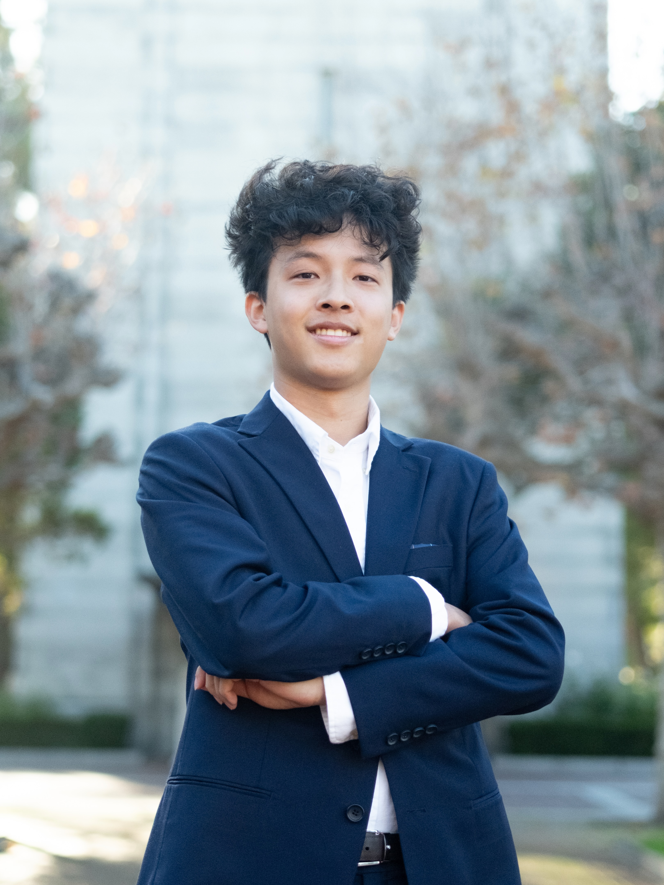

Harrison Tang
- Undergrad majoring in Engineering & Business at UC Berkeley's Management, Entrepreneurship, and Technology (M.E.T.) Program
- Masason Foundation Fellow, supported by SoftBank CEO Masayoshi Son; Prudential & Lions Clubs Service Recognition
- Interning at Amgen — creating digital twins and automation tools to improve manufacturing workflows for clinical drug products
- Conducting research at the Joint BioEnergy Institute (Lawrence Berkeley National Lab) — efficiently synthesizing biofuels and bioproducts from yeast variants through agrobacterium-mediated transformation
- Previously @ CVS Health, United Nations, Blue Origin, Innovative Genomics Institute
Stuff I do
- Currently building in the food / health / wellness space
- Invented a novel biosensing system to detect major contaminants in food in clinics & households; built a biosensor device 90% more affordable — now patenting
- Sociology & history research: the ethics of tech development, WWII & the Cold War, modern geopolitics, and Taiwanese Indigenous cultures
- Skiing, hiking, track, saxophone, and collecting LEGO Star Wars minifigs & sets
Press features
Research & Studies
Writing
Thoughts
Things I've written — essays, op-eds, and dispatches on health, tech, and whatever else I can't stop thinking about.
Newsletter
Harrison Tang on Substack
Add your newsletter tagline here
Featured
More writing